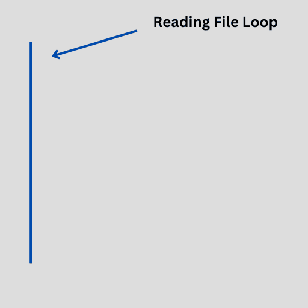

📘 Lab 4: Frequently Asked Questions
- ❓ Q: Do you have any tips for lab 4?
- ❓ Q: I'm getting a build error about a deleted function. What is wrong?
- ❓ Q: Why am I'm getting a build error about << not being defined on the ofstream?
❓ Q: Do you have any tips for lab 4?
💡 A: Of course! Here they are...
📝 Reading & Writing CSVs (Serialization/Deserialization)
- CSV = Comma Separated Values
- Each line = a row of data
- Each comma = separates a field (like name, health, etc.)
- If you're stuck:
- Print out each line as you read it — does it match the file?
- Check for extra whitespace or newlines messing up your data
- Double-check your delimiter
🔁 Deserialization (Reading CSV into Objects)
- Think of deserialization as "taking a line and filling in the blanks" for an object:
- Read the line
- Split it up (on the delimiter)
- Turn each piece into the right data type (int, float, string, etc.)
- Use that data to create an object
- If it's not working:
- Are you trying to convert a string to an int but getting a weird result?
- Are your object values all wrong?
- Print the fields before creating the object to see what you're actually using.
💾 Serialization (Saving Data Back to CSV)
- Serialization = turning an object back into a CSV line
- Grab the class members
- Format them into a string with commas
- Write that string to the file
- If you're stuck:
- Confirm you're writing one line per object
- Make sure fields are in the right order
- Test with a small amount of data first — it's easier to spot mistakes
🧱 Creating Class Objects from File Data
- You’re using the file to fill out an object’s constructor or setters
- Don’t overthink it — treat it like a fill-in-the-blank game:
- Read → Split → Convert → Pass into object
- Don’t overthink it — treat it like a fill-in-the-blank game:
- Common issues:
- Forgetting to convert a string to the correct type
- Mixing up the order of values
- Passing too few or too many values to the constructor
🔍 Debugging File I/O Stuff
- Add LOTS of print statements
- What line are you reading?
- What’s in each field after you split it?
- What values are being passed to the object?
- Keep the CSV file open in a text editor to cross-check formatting
- Make a test CSV with only 2–3 rows to simplify debugging

❓ Q: I'm getting a build error about a deleted function. What is wrong?
💡 A: Use pass by reference
You might be getting a build error like this:
error C2280: 'std::basic_ofstream<char,std::char_traits<char>>::basic_ofstream(const std::basic_ofstream<char,std::char_traits<char>> &)': attempting to reference a deleted functionThe problem is most likely with your serialize method. The problem is you're using pass-by-value.
To fix:
Use pass-by-reference on the std::ofstream parameter.
❓ Q: Why am I'm getting a build error about << not being defined on the ofstream?
💡 A: #include <fstream>
You might be getting a build error like this:
error C2676: binary '<<': 'std::ofstream' does not define this operator or a conversion to a type acceptable to the predefined operatorThis is because you have not #included the fstream header.
To fix:
Add #include <fstream> to the header where you are using std::ofstream.